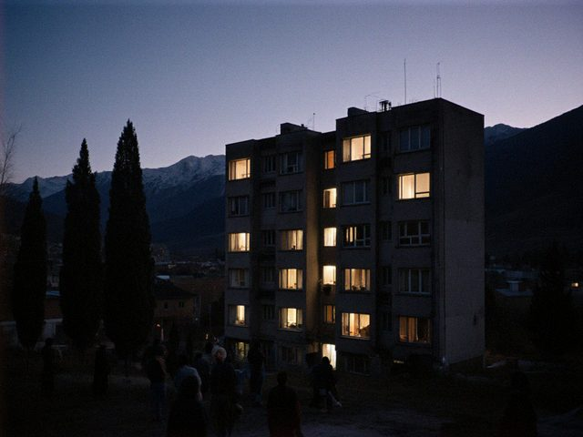

notes of a bank IT guy in Talas. plain, since 2022.
2026-11-01 · family
The boy's game moved. It is Steppe Crawl, a roguelike made by someone here in Talas, and he has played it on his phone since 2024, on the bus, at his grandmother's, in the queue at the passport office. In the year with no foreign internet it was one of the few things that still worked, because the whole game loads once and then needs no signal.
On Wednesday the author moved it to steppecrawl.online. The boy opened it on Thursday and his run was gone: a Tash-Kishi healer with three tamgas, one valley from the cleft under Manas Peak.
I explained over dinner. The browser keeps a site's saved data under the site's address. New address, new empty drawer. The old drawer is still in his phone, but the new game cannot open it. The note on the game's "What's new" page says this, in one sentence that nobody reads.
He took it well. He said the old run was "too careful" anyway, and started an Iradi Baatyr. Three years ago he found my Köch disk image and said "dad, this is actually good". Now he plays a game made in his own city and corrects its guide. I told him to send the author a bug report. He said he already had.
2026-09-01 · family
The boy started 7th class at School No. 31, the same school his mother went to. Informatics teacher: the same woman who taught his mother. She remembered Aizhan by name. She did not remember me, because I went to a different school, but she knew my old blog. Small city.
2026-07-19 · family
The boy is thirteen. He asked for nothing but a very good book on how radios work. I found one in the second-hand section at the bazaar, 1971 edition, a bit foxed. He read it in two days and told me my 2024 radio kit "had a wrong resistor in the diagram".
He is right. I checked. It was a printing error. I am a bank engineer and my son corrects the book.
2025-10-04 · family
My wife's branch has been rebuilt: new floor, new light, new counters, a plant by the door. She says the plant is fake. I say it is the only one in the building that has never had a technical failure.
They have also put in one of my machines. It is by the window. My wife says it's the first time I've been in her workplace "in a place where everyone can see me".
2024-12-08 · family
Every evening at six, when everyone starts cooking, the lights flicker in our block. Not out. Just a pulse, like a very small heartbeat.

the block at 18:04. The third window from the left is us. The pulse is not visible, you have to believe me.I measured it with a cheap meter: voltage drops from 227 to 198 and back in four seconds. Nobody else in the building has measured it. They have all just said "the electricity is like that".
2024-09-15 · family
First day of 5th class. Informatics is on the timetable: twice a week, and the teacher has a poster that says "A computer is a stupid, fast child". My son came home and said "I knew that already, I have a dad".
He wants to learn to program a machine to open a door. I said: start with a light. He said: a door is better. I said: a door has hinges. He said: so does a joke.
2024-07-21 · family
The boy is eleven. Present: a soldering iron and a kit for a small radio. He built it in one evening. It catches two stations and a lot of hiss. He was more proud of the hiss.
2023-07-23 · family
The boy is ten. Present: a second-hand laptop, 4 GB, that a colleague was throwing away. I cleaned it, put a light system on it, and showed him the three commands that make a program. He typed them. Then he typed them again. Then he asked how to make the screen blue.
My friend Aibek designed the birthday card (a grid of boxes, naturally). The boy said it was the best card because it was the only one with "no flowers".
2023-02-12 · family
My son (9) found my old disk image of Köch, the 1990 Iradi computer game I wrote about in 2006 on the old blog. He played it for three hours on an emulator and said "dad, this is actually good". Gulzat Kalmatova's pictures still work on a kid in 2023.
He asked why the horse is so square. I said: because the pixels were expensive.
2022-10-09 · family
The new tüntolk album came out on Friday: lullabies. The old Meerim from my first blog would have written six hundred exclamation marks. I listened to it in the kitchen at 11 at night with headphones, then with my wife, then with my son, who said "it is sleepy music, but good sleepy".
My rule in hello again is no photos unless they matter. Here is no photo. The music is the picture.
2022-03-27 · family
Online school, week 107. My son (8) sits at the kitchen table with a tablet and a teacher who is a rectangle. I have fixed the router five times. The sixth time I understood: the router is fine, the neighbour is downloading films.
Rule of the house: no films between 8 and 14. The neighbour was told politely. He moved his films to the night.